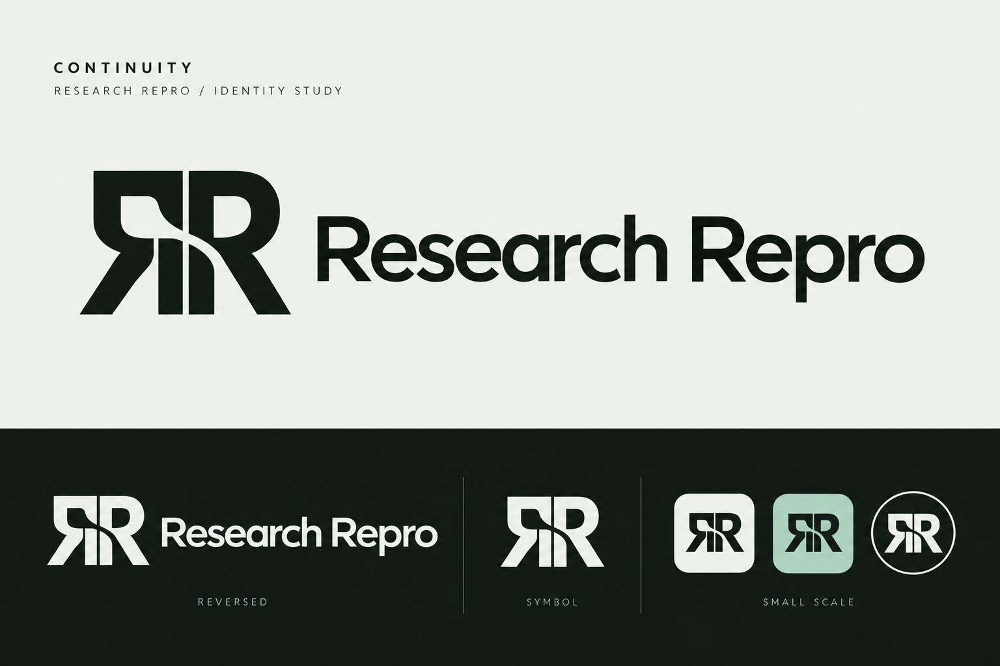
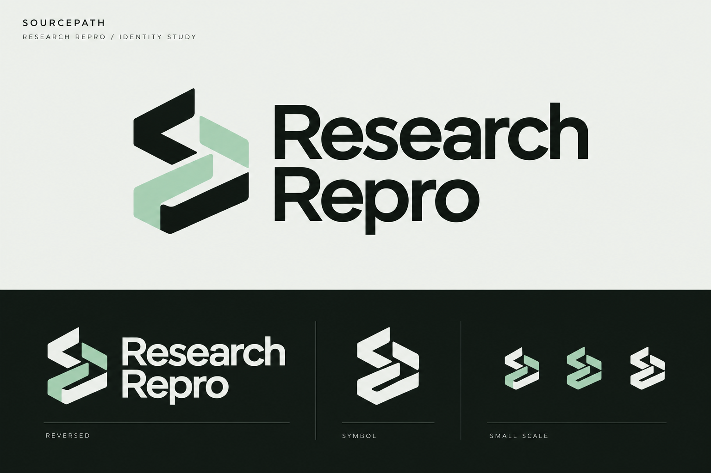
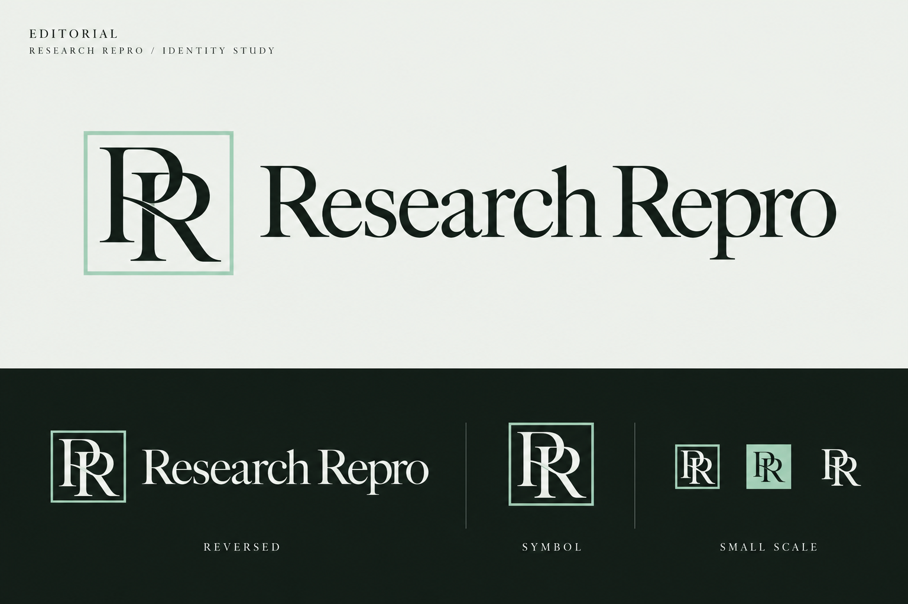
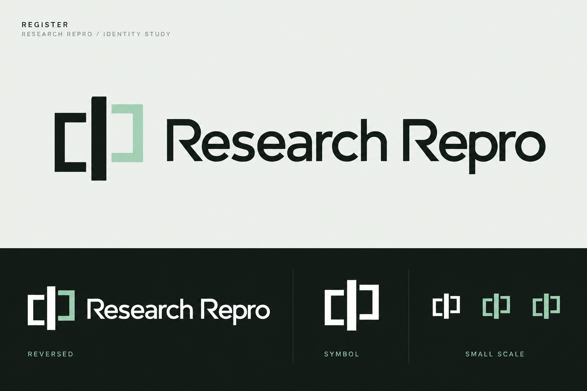

01 / CUSTOM MONOGRAMContinuity
A shared-spine RR monogram. The brand name becomes the symbol, with a precise repeated structure that connects naturally to reproducibility. Best for a distinctive enterprise-software identity.

02 / PROVENANCE PATHSourcepath
A compact continuous route connects stages of evidence. More abstract and product-oriented, with an angular graphic vocabulary that can carry into diagrams and motion.

03 / EDITORIAL LUXURYEditorial
A refined serif RR monogram and editorial wordmark. The strongest luxury direction for a publisher-facing brand; pair with the existing clean sans-serif interface. The frame is an identity device, not a certification seal.

04 / COMPUTATIONAL PRECISIONRegister
Aligned frames and a common datum suggest comparing two records. Closest to the observatory's existing framing language, with a compact technical symbol.

What the research changes
- Build a system, not just a badge. Pentagram's Isomorphic Labs case study connects identity, typography, grids and visual language. Here, each symbol offers a rule that can extend into the website.
- Typography can communicate publishing authority. OTTO's Elsevier work is a useful reference for connecting scholarly heritage and software through type.
- Make monochrome and small-size versions deliberate. Mozilla's identity and eLife's logo guidance support testing symbol and full wordmark separately.
- Differentiate from the category. Avoid copying Crossref's linked chevrons, ORCID's circular iD, or Code Ocean's wave vocabulary.
Recommendations are design judgments, not proof of commercial value. Artwork is exploratory and has not undergone trademark or similarity clearance.
Primary research references